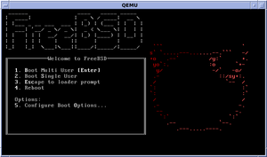
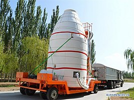

Flood maps

Про глобальне потепління сказано і написано було чимало, але незважаючи на це, багато людей не можуть в повній мірі усвідомити наслідки цього явища. Окислення океанів, жорстокі погодні катаклізми, зниження врожайності - і це тільки мала частина тих лих, які може викликати підвищення температури атмосфери. А ще глобальне потепління і викликане ним танення льоду, що цілком природно, загрожує затопленням суходолу і навіть островів. Щоб люди змогли наочно уявити собі наслідки підвищення рівня світового океану, автори відомого журналу National Geographic створили інтерактивну карту, яка демонструвала б затоплення прибережних зон.
Сайт: flood.firetree.net
Thetruesize

Вчені не прийшли до єдиної думки, як найбільш коректно відобразити рельєф кулястої планети на плоскому аркуші паперу. Це все одно, що намалювати карту на мандарині, зняти шкірку і спробувати розплющити її в прямокутник. Ясно, що області, близькі до «полюсів» доведеться сильно розтягнути. Ми всі користуємося проекцією Герарда Меркатора, але вона має недолік: чим ближче острова і країни розташовані до полюсів, тим більше вони здаються. Сайт thetruesize.com створений, щоб ми краще представили реальні співвідношення розмірів на карті.
Сайт: thetruesize.com
Labster

Labster надає учням доступ до реалістичного лабораторного досвіду, який дозволить їм проводити експерименти і практикувати свої навички у веселому і безризиковому навчальному середовищі. В даний час є 83 моделі, які охоплюють усе від біології і медицини до фізики і хімії. Тисячі студентів університетів і старших класів використовують Labster щороку в якості змішаного навчання. Недавнє дослідження в області біотехнології природи показує, як студенти, які використовують Labster, вчилися на 101% більше. Легко оцінюйте або відстежуйте успішність учнів і дайте їм можливість контролювати своє навчання. Візьміть студентів за допомогою відповідних сценаріїв і 3D-анімації, візуалізуючи життєві науки аж до молекулярного рівня.
Сайт: labster.com
The FreeBSD Project
FreeBSD - це операційна система, яка використовується для сучасних серверів, настільних комп'ютерів і вбудованих платформ. Велике співтовариство безперервно розвивало це більше тридцяти років. Завдяки розширеним можливостям роботи в мережі, безпеки і сховища FreeBSD стала платформою для багатьох найнавантаженіших веб-сайтів і найпоширеніших вбудованих мережевих пристроїв і пристроїв зберігання.
Сайт: freebsd.org
Експериментальний термоядерний реактор

Міжнародний експериментальний термоядерний реактор (ITER) був закладений в 2007 році на півдні Франції в шістдесяти кілометрах від Марселя. Будівництво даного об'єкту спочатку планувалося закінчити 2016, але зараз ці терміни зрушені до 2020. Загальний кошторис проекту вже перевищує 15 мільярдів євро. Над проектом працюють вчені та інженери з ЄС (спільнота виступає як єдине ціле), Китаю, США, Росії, Індії, Японії, Південної Кореї і Казахстану.
Mozi
Mozi — перший супутник в світі, призначений для квантової передачі інформації на Землю. QSS є проектом Китайської академії наук за участю Австрійської академії наук. Загальна вартість оцінюється близько 100 млн доларів. Одним із завдань місії є здійснення квантової передачі інформації і установка захищеного каналу зв'язку між Пекіном і Віднем, повністю невразливого для хакерів. Супутник протягом чотирьох місяців після виведення на орбіту проходив орбітальне тестування. Станом на 18 січня 2017, тестування супутника закінчено, всі системи працюють справно і супутник передається в фазу експлуатації на орбіті.
Сайт: wikipedia.org
Dawn ver.β

Кафе Dawn ver.β примітне тим, що повністю укомплектовано незвичайними офіціантами-роботами. Робот Orihime-D, розроблений стартапом Ory, що спеціалізуються на робототехніці для людей з обмеженими можливостями. Співробітники з такими захворюваннями, як бічний аміотрофічний склероз або з травмами спинного мозку, що працюють на дому, отримуєте $ 1000 ієн (585 рублів) в годину (стандартна заробітна плата для неповного робочого дня в Японії) за те, що вони подають каву і взаємодіють з клієнтами. Але, що більш важливо для цих людей, це те, що вони отримали незалежність.
Сайт: viewout.ru
Dark Matters:
Twisted But True
 Розповіді про сенсаційну сторону науки, включаючи досліди.
Розповіді про сенсаційну сторону науки, включаючи досліди.
Let There Be Light
 Фільм розповідає про цілеспрямованих вчених, які
працюють над створенням установки термоядерного синтезу.
Фільм розповідає про цілеспрямованих вчених, які
працюють над створенням установки термоядерного синтезу.
Lo and Behold, Reveries of the Connected World
 Документальна картина розглядає минуле, сьогодення і майбутнє
мережі інтернет.
Документальна картина розглядає минуле, сьогодення і майбутнє
мережі інтернет.
Inside: Google
 Документальний фільм про становлення найбільшого пошуковика Google.
Документальний фільм про становлення найбільшого пошуковика Google.